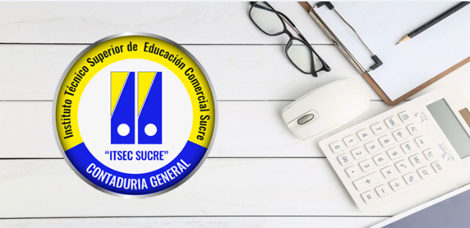

Contaduría General
Contaduría General

TITULO
Técnico Superior en Contaduría General
DURACIÓN
Tres periodos académicos
HORARIOS
Turno Tarde: lunes a viernes: 02:00 a :06:00
Turno Nocturno: lunes a viernes: 18:30 a 22:10 p.m.
CARACTERISTICAS PROFESIONALES
El Técnico Superior en Contaduría General, aplica normas y políticas contables, tributarias, procedimientos administrativos y desposiciones legales vigentes
- Utiliza metodologías científicas, herramientas tecnológicas y técnicas para diseñar, organizar, ejecutar y evaluar la información contable, económicay financiera de las diversas organizaciones públicas, privadas y mixtas
- Asesora a empresas e instituciones, PyMES, empresas sociocomunitarias en el área contable y tributaria